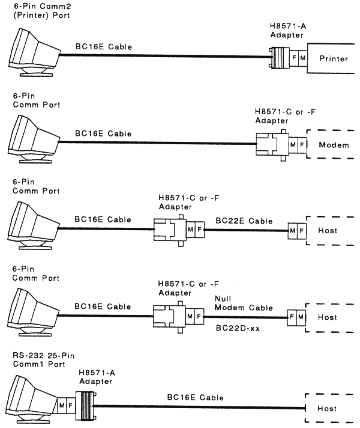

This appendix provides information on how the VT420 communicates with a host computer, printer, or modem. The appendix shows the cables you can use for different system configuration. It describes how XON and XOFF characters help control data flow. The last section describes the signals carried by the connectors on the rear of the terminal.
The terminal operates on full-duplex asynchronous lines only, with 10 possible transmit and receive speeds. You can use split transmit and receive speeds, but you must use the same speeds as your host system and printer.
To match your host system's speed, use the Communications Set-Up screen (Chapter 5). To match your printer's speed, use the Printer Set-Up screen (Chapter 8).
For more information on communication, see the VT420 Programmer Reference Manual.
You can connect the VT420 directly to a local host system with a cable. You can also connect the terminal indirectly to a remote host system using (1) a terminal server, or (2) a modem or acoustic coupler connected to public-switched or dedicated telephone lines. See "Modems" in Chapter 8.
Figure C-1 shows the DEC-423 and RS-232 cables you can use to connect the VT420 to a host system or printer. To order cables, see Appendix B.
 |
Normally, the VT420 processes and displays characters as fast as it receives them. If the host system send data faster than the terminal can display it, the terminal can use XON/XOFF flow control to tell the host to wait until the terminal has caught up.
The VT420 stores incoming characters in a 254-character input buffer. When the buffer fills to a predetermined level (XOFF point), the terminal sends an XOFF character to stop the host system from sending more characters. When the buffer empties to an appropriate level (XON point), the terminal sends an XON character to tell the host system to resume sending character.
If the terminal is set up to run one session, you can select a first XOFF point of 64 or 128 characters (Communications Set-Up screen). The XON point is 32 characters. If the host system fails to respond to the first XOFF character, the terminal sends another XOFF character when the buffer fills to 220, and when the buffer is completely full.
If you use SSU software to run two sessions, you can select a first XOFF point of 64, 256, or 1792. SSU provides its own credit-based flow control, so XOFF is not needed.
For normal interactive use, you should use the default XOFF point of 64 characters. This setting prevents the host system from getting too far ahead of what is displayed on the screen. In some cases, using an XOFF point greater than 64 characters may improve the average speed for processing characters, since the host does not have to wait as often.
If XON/XOFF flow control is enabled:
| Ctrl S (XOFF) | Puts the screen display on hold. |
| Ctrl Q (XON) | Releases the screen display. |
If XON/XOFF flow control is disabled, you cannot use Ctrl S and Ctrl Q to hold and release the screen. Instead, the keys will send their corresponding codes to the host system.
The VT420 can process text (without ESC sequences) at approximately 2000 characters/second. This rate allows the VT420 to communicate at 19,200 baud. Some editing functions, such as inserting or deleting characters in lines, require additional time to process. The 254-character input buffer allows for short bursts.
For extensive editing, the host system should be programmed to insert fill characters (NULs) after editing sequences. If the host system is not programmed, you should reduce the terminal baud rate to 9600 baud or less. See the Communications Set-Up screen in Chapter 5.
When the VT420 makes a connection to the host system through a modem, the terminal performs the following operations to ensure it is ready to send and receive:
Any of the following conditions will disconnect the connection to the host system:
Recall or Default fields in the Set-Up Directory.The usual way to disconnect communications is to type Shift F5 (Break).
A break condition is the occurrence of a continuous space on a communication line for greater than one character time. Some systems and communication equipment recognize break as a special attention signal.
You can generate a break signal (275 ms space) by pressing F5 (Break), unless you have changed the function of the F5 key (Keyboard Set-Up screen).
Changing the terminal comm ports feature setting from S1=Comm1 to
one of the two-session configurations also generates a break signal. This
action alerts the host that the session configuration has been altered.
The F5 (Break) key has three functions when used as a break key.
| F5 (Break) | Sends a break signal to the host. |
| Shift F5 (Break) | Disconnects communications when you use a modem. |
| Ctrl F5 (Break) | Sends the answerback message (Communications Set-Up screen) to the host. |
The VT420 has two 6-pin connectors (Comm 1 and Comm 2 ports) and one 25-pin connector, whch can be used instead of the 6-pin Comm 1 port connector. Table C-1 describes the interface signals for the 25-pin host system connector. Table C-2 describes the signals for the 6-pin host connector and the 6-pin printer connector. Figure C-2 shows the pin numbers for the 6-pin connectors.
| Pin | Signal | Mnemonic | EIA/CCITT/DIN | Description |
|---|---|---|---|---|
| 2 | Transmitted data | TXD | BA/103/D1 | From VT420 In modem control modes, sends data only when RTS, CTS, DSR, and DTR signals are on. |
| 3 | Received data | RXD | BA/104/D2 | To VT420 |
| 4 | Request to send | RTS | CA/105/S2 | From VT420 |
| 5 | Clear to send | CTS | CB/106/M2 | To VT420 |
| 6 | Data set ready | DSR | CC/107/M1 | To VT420 |
| 7 | Signal ground | SGND | AB/102/E2 | Serves as common ground reference potential for all connector signals, except protective ground. |
| 8 | Receive line signal detect (carrier detect) | RLSD | CF/109/M5 | To VT420 When off, indicates no signal received, or signal is unsuitable for demodulation. |
| 12 | Speed indicator | SPDI | CI/112 | To VT420 When off, selects the |
| 20 | Data terminal ready | DTR | CD/108.2/S1.2 | From VT420 |
| 23 | Speed select | SPDS | CH/111/S4 | From VT420 |
+-------------------------+
| |
| 1 2 3 4 5 6 |
| |
| |
+--------------+ +--+
| |
+-------+ |
| Pin | Signal | Mnemonic | Description |
|---|---|---|---|
| 1 | Data terminal ready | DTR | From VT420 |
| 2 | Transmitted data | TXD+ | From VT420 In modem control modes, sends data only when DSR and DTR signals are on. |
| 3 | Transmit signal ground | TXD- | Provides the common ground reference potential for transmitted signals TXD+ and DTR. |
| 4 | Receive signal ground | RXD- | Provides the common ground reference potential for received signals RXD+ and DSR. |
| 5 | Received data | RXD+ | From VT420 |
| 6 | Data set ready | DSR | To VT420 From the printer: When on, tells the VT420 that the printer is ready to print. The terminal checks for DTR from the printer before each print operation. |
The VT420 operates in accordance with the following national and international communication standards: